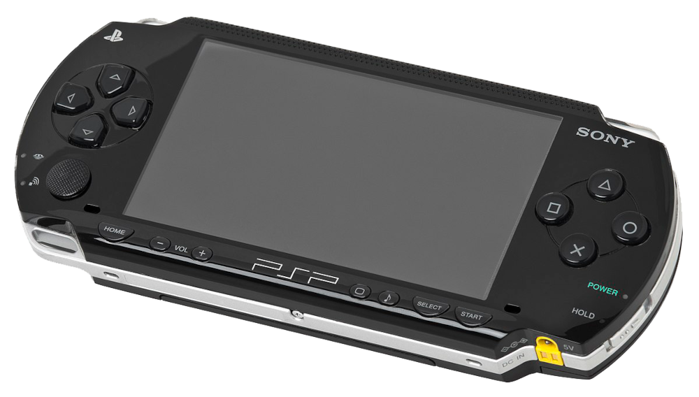

PSP
R$180
PlayStation Portable, também conhecido pela sigla PSP, é um console portátil de videojogos da família
PlayStation desenvolvido pela Sony Computer Entertainment. Foi anunciado na E3 de 2004 e lançado
em 12 de dezembro de 2004 no Japão, e nos Estados Unidos em 24 de março de 2005. Seu principal
concorrente era o Nintendo DS, console portátil da Nintendo.